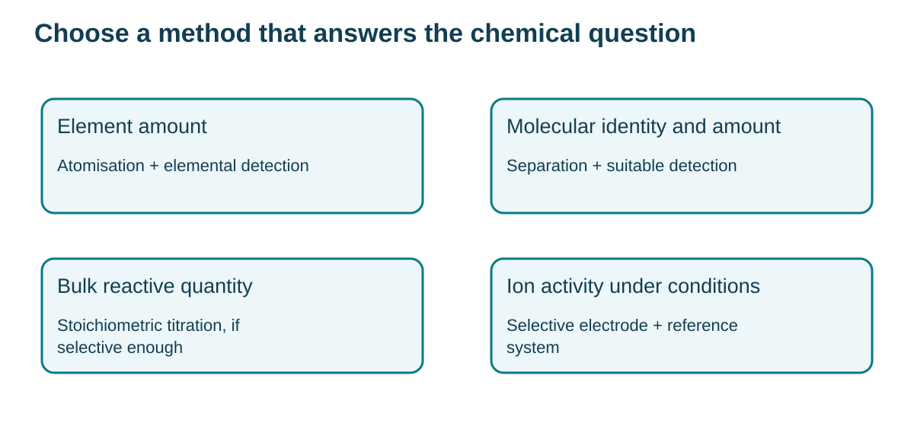
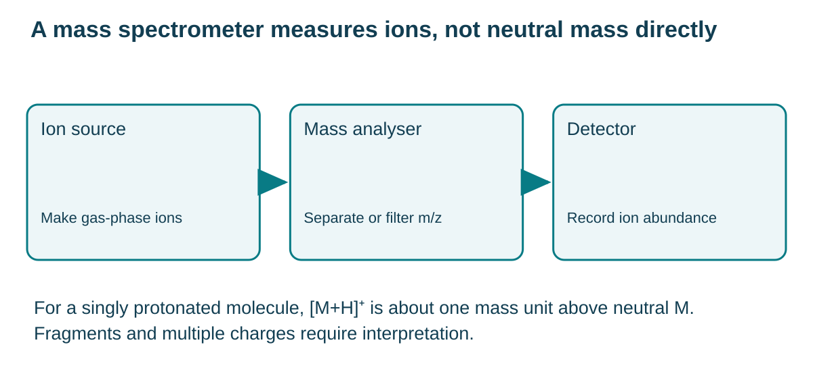

library(readr)
library(dplyr)
library(ggplot2)
standards <- read_csv("data/course/case-standards.csv", show_col_types = FALSE)
fit <- lm(area ~ caffeine_mg_l, data = standards)
a <- unname(coef(fit)[1])
b <- unname(coef(fit)[2])
qc <- read_csv("data/course/case-qc.csv", show_col_types = FALSE) |>
mutate(estimated_mg_l = (area - a) / b,
recovery_percent = 100 * estimated_mg_l / reference_mg_l,
pass = recovery_percent >= acceptance_low &
recovery_percent <= acceptance_high)
qcChoosing and defending a result
Build and defend the complete analytical argument
Interactive experiment
Explore the browser demo: Which evidence allows a result, and when do you need a genuinely new measurement? Predict first, change one condition, then explain the result. Export a CSV to reproduce one calculation or plot in R.
Finish with the analytical argument
The final case provides new caffeine standards, sample responses, preparation records and an independent check. You will choose which results can be reported, identify the need for a new dilution or better separation, and write a reproducible conclusion. Keep the analytical question in view: caffeine mass concentration in each supplied beverage, not simply an area printed by software.

The case uses a supplied HPLC separation and UV response. The candidate peak has supporting standard-retention evidence and explicit separation decisions. The scenario assumes the accepted peaks represent caffeine. No instrument method is claimed to be validated for every beverage. The file dictionary records the assumptions behind the supplied flags and uncertainty inputs.
Decide on the method before fitting data
An elemental method would destroy the molecular information needed to identify caffeine. A nonspecific single-wavelength absorbance of a complex drink could include several absorbing components. A suitable separation can make a detector response more selective. Method choice involves the required range, matrix, identity evidence, preparation recovery, uncertainty and available sample. The most sensitive instrument can still answer the wrong measurand.
Calibrate and check this independent dataset

The case line is area = 4 + 40 × concentration, valid over 0–30 mg/L under the supplied assumptions. The independent 15.00 mg/L check recovers about 100.67%, within the supplied 95–105% exercise window. These standards are deliberately idealised: their zero residual is not evidence of zero real measurement uncertainty. The case supplies separate standard uncertainties for final concentration estimates. Do not derive a perfect uncertainty from these rounded teaching points.
Make the decision before exporting a number
samples <- read_csv("data/course/case-samples.csv", show_col_types = FALSE)
results <- samples |>
mutate(final_estimate_mg_l = (area - a) / b,
in_range = final_estimate_mg_l >= 0 & final_estimate_mg_l <= 30,
reportable = in_range & resolved & qc_pass & all(qc$pass),
dilution_factor = final_ml / aliquot_ml,
original_mg_l = if_else(reportable,
final_estimate_mg_l * dilution_factor, NA_real_),
u_original_mg_l = if_else(reportable,
u_final_concentration_mg_l * dilution_factor, NA_real_),
decision = case_when(!qc_pass | !all(qc$pass) ~ "withhold: QC",
!resolved ~ "withhold: coelution",
!in_range ~ "remeasure: outside range",
TRUE ~ "conditional result"))
results |> select(preparation_id, sample_id, original_mg_l, u_original_mg_l, decision)
write_csv(results, "output/final-case-results.csv", na = "NA")C1 gives 15 mg/L in the final solution and 150 mg/L in drink A. C2 exceeds range and cannot establish drink B’s concentration. C3 is a new preparation of B using 2.00 mL made to 50.00 mL, rather than C2’s 5.00 mL. Its valid final estimate is 16 mg/L, yielding 400 mg/L original. C4 has an unresolved interfering peak and no reportable caffeine concentration despite passing range and QC.

C1’s supplied final-concentration standard uncertainty is 0.15 mg/L and C3’s is 0.16 mg/L. Scaling by dilution gives 1.5 and 4.0 mg/L respectively. This is a limited budget, neglecting volumes, sampling and preparation recovery. The error bars are standard uncertainties, not 95% confidence intervals. Identify what would need to be established before claiming the full method’s uncertainty is fit for the intended decision.
Agreement is not the same as association
The comparison dataset measures six separate reference samples by HPLC and a nonspecific unseparated UV method. Both methods increase with reference concentration, but their differences tell different stories.
comparison <- read_csv("data/course/method-comparison.csv", show_col_types = FALSE) |>
mutate(hplc_difference = hplc_mg_l - reference_mg_l,
uv_difference = nonspecific_uv_mg_l - reference_mg_l)
ggplot(comparison, aes(reference_mg_l, uv_difference)) +
geom_hline(yintercept = 0, linetype = "dashed") + geom_point() +
labs(x = "Reference result (mg/L)", y = "Unseparated UV minus reference (mg/L)") +
theme_minimal()
A high correlation would not establish interchangeability or acceptable bias. The pattern may motivate matrix/selectivity investigations; the plot alone does not prove the chemical cause. Reference uncertainty, sample scope and the required performance must be considered before accepting a method comparison.
Where mass spectrometry adds evidence

A mass spectrometer measures ions by mass-to-charge, not neutral molecular mass directly. In positive electrospray a singly protonated caffeine ion can occur near \(m/z\) 195, whereas neutral caffeine has nominal mass 194. Multiple charges, adducts and fragments change the interpretation. Chromatography-MS combines a retention dimension with ion information, but an ion signal still needs a suitable calibration for quantification. Waters guide to ionisation and mass-to-charge

Do not identify a molecule from a single nominal mass or from this deliberately illustrative spectrum. Authentic reference spectra, exact-mass or fragmentation evidence where appropriate, blanks and suitable standards can strengthen an identity claim. More instrument detail is optional here: the core task is to understand which evidence addresses identity and which addresses amount.
Your final report
Use the supplied course-report.Rmd template at the project root. Include the measurand and sample scope; preparation factors; calibration direction and range; QC results; a table of supported results and explicit withheld reasons; standard uncertainty with its omissions; and a conclusion explaining the next action for each unresolved sample. Explain what evidence supports caffeine identity.
Render after restarting R. Ask a peer to render from the original data in a new folder. A reader should be able to follow a reported number back to the signal, preparation record and chemical assumption. Do not replace the chemical interpretation with a pasted R summary.
For a new accepted sample with area 804 and a 4.00 mL aliquot made to 40.00 mL, calculate original concentration. Then explain what changes if its integration window contains an unresolved second absorbing compound.
Check your result and next action
Final concentration is \((804-4)/40=20\) mg/L and the factor is 10, giving 200 mg/L original, conditional on the stated method and accepted evidence. With an unresolved contributing compound, that area no longer supports the same caffeine estimate. Improve separation or obtain justified additional selective evidence before reporting it.
Selected Harris and Lucy reading: integration and selected mass spectrometry. Read by topic; the planned course edition is not yet confirmed.